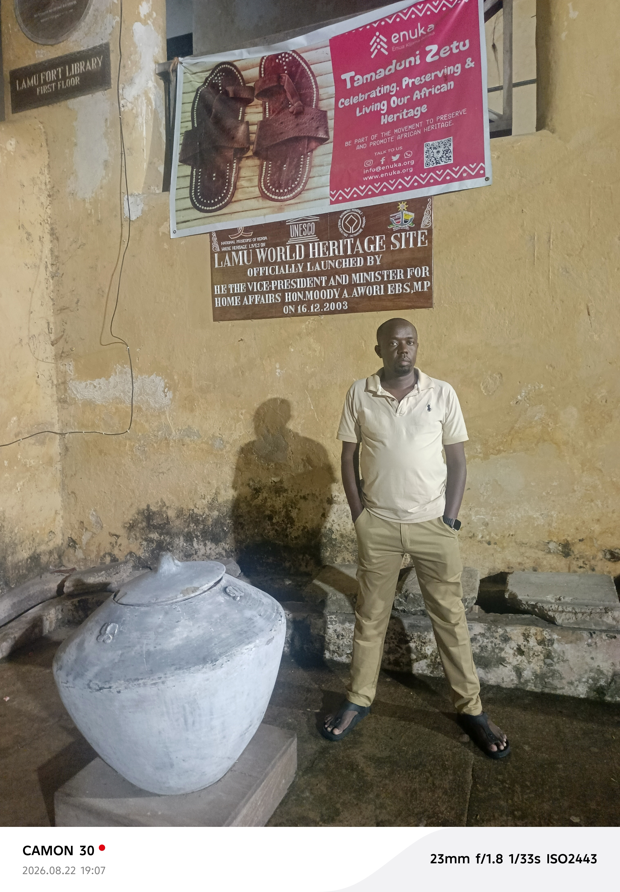
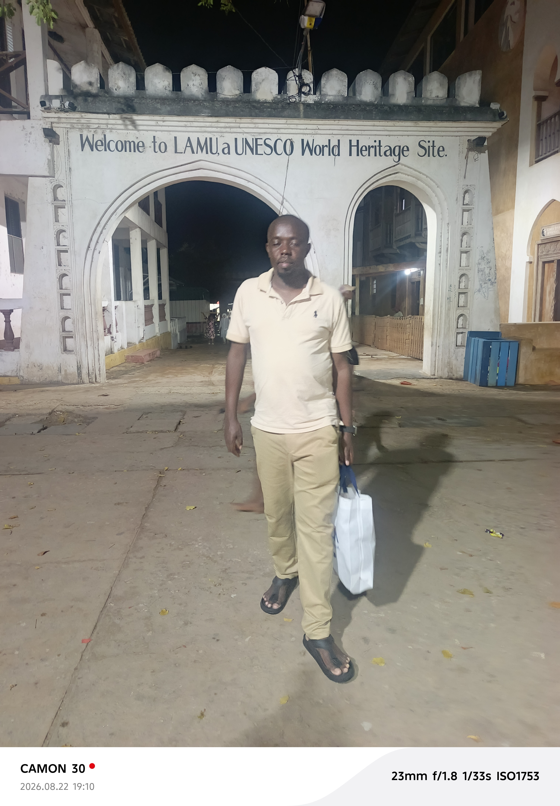
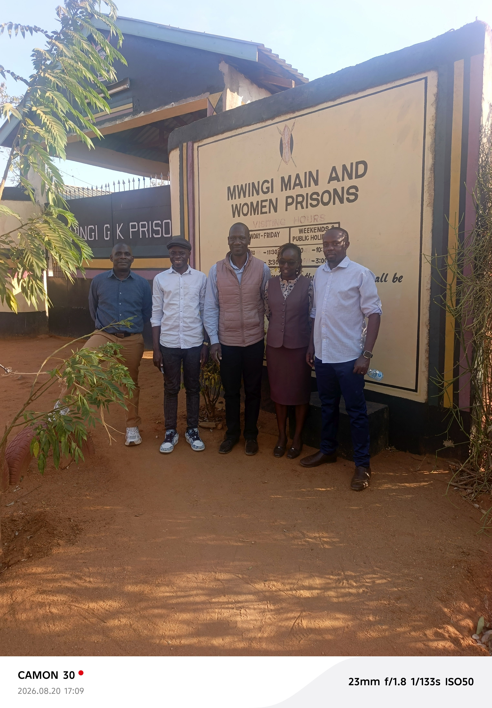
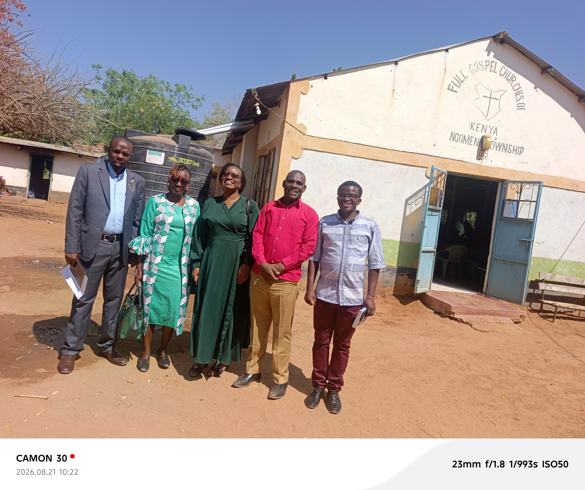
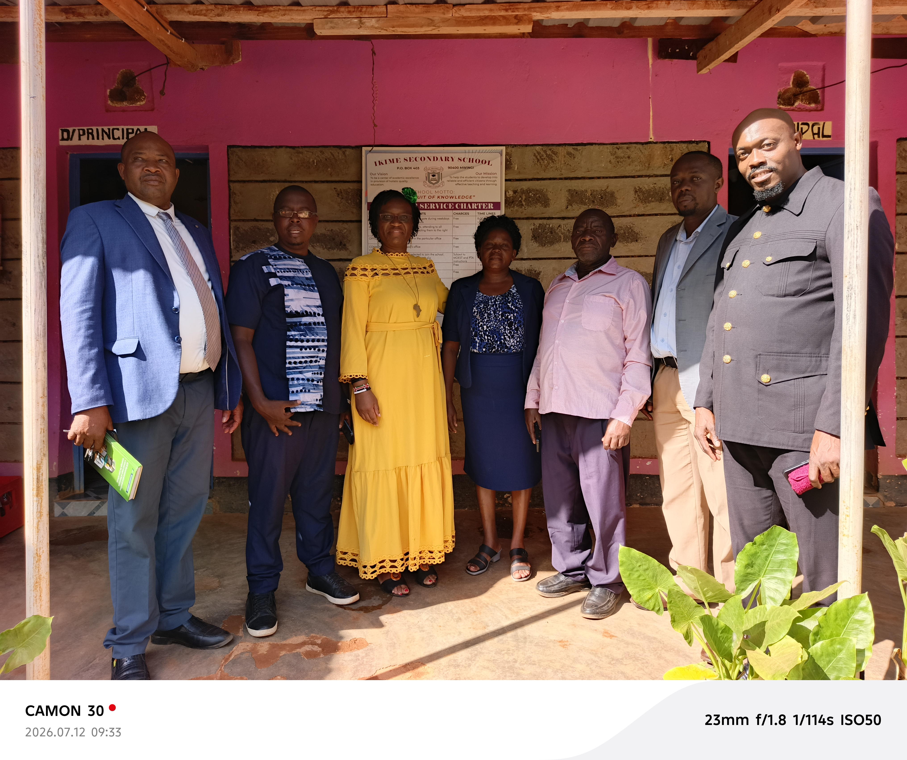
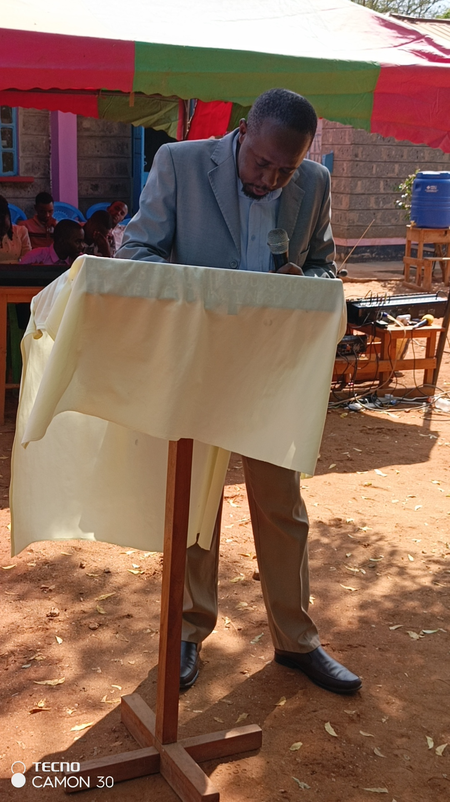

An apostolic, prophetic, and governance assembly equipping believers to operate in the Courts of Heaven and build insulated economic ecosystems on earth.
Reserve Courtroom 101 SessionAt Kingdom Ekklesias Koinonia (KEK), we believe that effective prayer is not a matter of emotional striving—it is a matter of legal alignment in the spiritual realm[cite: 9]. We operate as a modern legislative assembly (Ekklesia), bridging judicial intercession in the Courtrooms of Heaven with real-world structural transformation through our youth governance pipelines and the Goshen Cities Ecosystem[cite: 9, 11].
Weekly digital sessions via Google Meet & Zoom unpacking spiritual mechanics, bloodline deliverance, prophetic blueprints, and kingdom governance for believers globally[cite: 9].
Join our online fellowship and virtual prayer sessions to build spiritual foundations and learn heavenly legislation[cite: 9, 10].
Stand in agreement with our dedicated prayer watchmen and intercessors for strategic breakthrough and spiritual alignment[cite: 9].
Consecrated daily watches (including 3:00 PM and Midnight EAT) standing at geographic gates to execute warfare, enforce prophetic scrolls, and dismantle unrighteous altars[cite: 9].
A subscription partnership matching individuals and entrepreneurs with assigned ministers for daily, personalized prayer coverage and spiritual dossier reporting[cite: 6, 9].
Aligning households with financial stewardship through private liquidity pools, trust-backed asset protection, agricultural sanctuaries, and insulated family wealth systems[cite: 9, 11].
A Three-Dimensional Shift from the Battleground to the Courtroom[cite: 7]
True transformation is not a product of human willpower or emotional hype—it is a matter of legal alignment in the realms of the spirit[cite: 7, 8].
Many believers face persistent, cyclical battles that seem to resist ordinary prayer[cite: 7, 9]. Scripture reveals that our God is not only a loving Father; He is a Righteous Judge (Hebrews 12:23)[cite: 7, 9]. When invisible ceilings block your destiny despite your devotion, it is often because you are fighting on an emotional battlefield when you ought to be legislating in a Heavenly Courtroom[cite: 7, 9].
Under the covenant grace of Yeshua Hamashiach (Jesus Christ)—our Eternal Advocate and High Priest—every legal accusation, ancient covenant, or unrighteous trade can be legally annulled and dismantled[cite: 7, 9].
Before a systematic destiny shift can occur, three foundational matrices governing your life must be judicially addressed and rewritten[cite: 7, 9]:
We invite individuals, families, enterprise leaders, and corporate groups to book a dedicated, structured Courtroom session to address and resolve:
Dismantling unexplainable delays, chronic health challenges, and soul trades across your timeline to unseal your personal identity scroll[cite: 7].
Annulling recurring patterns of divorce, premature death, and dysfunctional household cycles to secure an unbroken spiritual legacy for your lineage[cite: 7, 9].
Uprooting lack, stagnant enterprise doors, and missing helper connections while aligning your wealth with the insulated Goshen Ecosystem architecture[cite: 7, 9, 11].
Breaking ministerial ceilings, leadership fatigue, and division—shifting your operations from defensive warfare to legislative governance[cite: 7, 9, 10].
Dealing with localized witchcraft, regional strongholds, and environmental limitations to enforce the frequency of the New Jerusalem over your home or land[cite: 7, 9].
"Every man according as he purposeth in his heart, so let him give; not grudgingly, or of necessity: for God loveth a cheerful giver. And God is able to make all grace abound toward you..." — 2 Corinthians 9:7–8
When we step into these judicial dimensions of divine ministration, co-partnering with the Lord through seeds and love offerings honors the altar, releases intercessory covering, and anchors spiritual verdicts into physical manifestation[cite: 6, 7].
Move your case from the battleground to the courtroom and enforce the verdict of the Cross over your life, family, or enterprise[cite: 7, 9].
✉️ Direct Inquiries & Submissions: kingdom.ekklesias.inv@gmail.com
Access official blueprints, judicial frameworks, proposals, and training manuals for offline study and distribution.
Official ministry profile detailing functional dockets, Courts of Heaven theological foundation, and regional operations[cite: 9].
Administrative and judicial framework for enacting binding decrees, petitions, and legal standings in the Councils of Heaven[cite: 8].
Judicial manual containing step-by-step courtroom petitions for Melchizedek entry, legal cleansing, and destiny realization[cite: 7].
Teaching manual on Ekklesia governance, binding and loosing protocols, and activating divine decrees on Earth[cite: 10].
Comprehensive overview of intercessory coverage tiers, daily watches, and partner intake guidelines[cite: 6].
Strategic brief detailing national realignment protocols, the Goshen ecosystem model, and Gen Z governance restoration[cite: 11].
An ongoing ledger of completed territorial assignments, curriculum releases, and ecosystem developments.
Complete intake forms for event attendance, Courts of Heaven prayer dossiers, and intercessory partnership enrollment[cite: 6, 7].
Schedule your 1-on-1 virtual courtroom session via our calendar application[cite: 7].
Submit your confidential prayer requests for assigned daily intercession[cite: 6].
Submit Prayer DossierEnroll your family or business into the Goshen asset protection & trust program[cite: 9, 11].
Request Goshen EnrollmentVisual highlights from our seminars, prison ministries, and regional assemblies across Kenya[cite: 9].






Stay aligned with our daily prayer watches, weekly teachings, and legislative broadcasts across all platforms[cite: 9, 10].
✉️ Email: kingdom.ekklesias.inv@gmail.com
📱 SMS / WhatsApp Direct: +254 727 953 458
 KINGDOM EKKLESIAS
KINGDOM EKKLESIAS